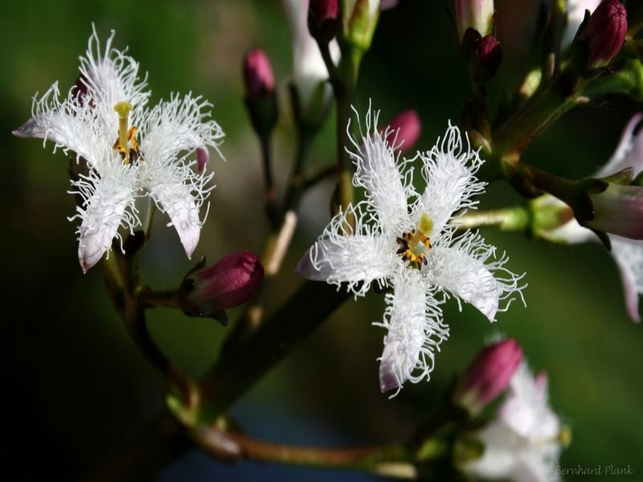

Fieberklee
Menyanthes trifoliata
Eine Schwimmblattpflanze, die auch nach der Verlandung des Gewässers noch lange Zeit die Niedermoorflora bereichern kann.
Eine Schwimmblattpflanze, die auch nach der Verlandung des Gewässers noch lange Zeit die Niedermoorflora bereichern kann.